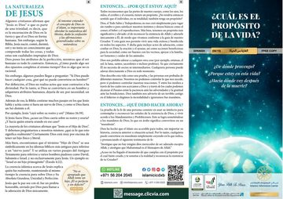

Los derechos de las mujeres en el Islam
Folleto de 6 páginas publicado por el Islamic Information Center (Dubái).
Respetada, Honrada, Apreciada.
INTRODUCCIÓN Se cree que la mujer en el Islam está esclavizada, humillada y oprimida. Pero ¿es realmente así? ¿Son las millones de mujeres musulmanas simplemente mujeres esclavizadas, o son estos conceptos erróneos fabricaciones de algunos medios de comunicación? Hace más de catorce siglos, el Islam otorgó a las mujeres derechos de los que la mujer en Occidente sólo ha disfrutado recientemente. En la década de 1930, Annie Besant notó una verdad importante al decir: “La Inglaterra cristiana ha reconocido el derecho de la mujer a la propiedad, mientras que el Islam le ha otorgado este derecho en todas las épocas. Es una calumnia decir que el Islam enseña que la mujer no tiene alma.” [La vida y enseñanzas de Mahoma, 1932]. Los hombres y las mujeres descienden todos de una sola persona, el profeta Adán —la paz sea con él—, y el Islam no acepta para ninguno de los dos sino la justicia y el buen trato. IGUALDAD EN LA RECOMPENSA Y LA RESPONSABILIDAD Los hombres y las mujeres adoran a Dios de la misma manera; es decir, adoran al mismo Dios (Allah), realizan los mismos actos de adoración, siguen el mismo libro sagrado y se aferran a las mismas creencias. Allah —la palabra árabe para referirse a Dios que significa el único Dios verdadero de toda la creación— juzga a todos los seres humanos con justicia e imparcialidad. Dios, exaltado sea, ha afirmado la equidad en el trato y en la recompensa entre hombres y mujeres en muchos versículos del Noble Corán. «Dios ha prometido a los creyentes y a las creyentes jardines por donde cuyos bajos corren ríos, donde morarán eternamente, y moradas agradables en los jardines del Edén» «No dejaré sin recompensa la obra de ninguno de vosotros, sea hombre o mujer» Estos versículos nos muestran que la recompensa depende de las obras de la persona, no de su sexo. El género no juega ningún papel en la recompensa o el juicio de una persona. Dijo Dios Altísimo: «Y para ellas (las mujeres) hay derechos equivalentes a los que tienen ellos según el buen uso»
Si comparamos el Islam con otras religiones, veremos que el Islam proporciona justicia entre los géneros. Por ejemplo, el Islam rechaza la idea de que Eva tenga más culpa que Adán por haber comido del árbol prohibido. Acorde al Islam, Adán y Eva pecaron ambos, y Dios aceptó su arrepentimiento y los perdonó. IGUALDAD EN EL DERECHO AL CONOCIMIENTO El hombre y la mujer están igualmente comandados a adquirir conocimiento. El Profeta ﷺdijo: «La búsqueda del conocimiento es una obligación para todo musulmán». Asimismo, existieron eruditas musulmanas en tiempos del Profeta ,ﷺalgunas de su propia familia, otras de entre sus compañeros o sus hijas. Entre las más destacadas está Aisha, esposa del Profeta ,ﷺde quien se transmitió una cuarta parte de la ley islámica. También hubo otras mujeres juristas y eruditas de las cuales aprendieron grandes y reconocidos sabios. IGUALDAD EN EL DERECHO A ELEGIR ESPOSO El Islam honró a la mujer otorgándole el derecho a elegir esposo y a conservar su apellido familiar tras el matrimonio. Aun así, muchos tienen la impresión de que los padres fuerzan a sus hijas a casarse, pero esto es una práctica cultural sin fundamento en el Islam, y de hecho está prohibida por la ley islámica. En tiempos del Profeta ,ﷺuna mujer acudió a él y le dijo: «Mi padre me casó con mi primo para elevar su estatus en la tribu, sin mi consentimiento». Entonces el Profeta ﷺmandó llamar al padre, y en su presencia le dio a la mujer el derecho de mantener el matrimonio o anularlo. Ella respondió: «Acepto lo que hizo mi padre, Mensajero de Dios, pero quise mostrar a las mujeres que los hombres no tienen poder absoluto en esto». IGUALES, PERO DIFERENTES Aunque hombres y mujeres disfrutan de derechos iguales como principio general, los derechos y responsabilidades específicas concedidos a cada uno no son idénticos. Hombres y mujeres tienen derechos y deberes complementarios, no iguales. Más allá de las diferencias anatómicas externas e internas, los científicos saben que existen muchas diferencias en la forma en que el cerebro masculino y el femenino procesan el lenguaje, la información y las emociones.
Por ejemplo, Edward Wilson, experto en biología social de la Universidad de Harvard, dice: “Las mujeres tienden a ser superiores a los hombres en habilidades verbales, empatía y habilidades sociales, mientras que los hombres —entre otras cosas— tienden a ser superiores en independencia, dominio, habilidades espaciales y matemáticas, así como en agresividad relacionada con el estatus y otras características.” Por tanto, no es sabio tratar a ambos géneros de la misma manera e ignorar sus diferencias. El Islam enseña que hombres y mujeres tienen papeles complementarios, aunque distintos, y cada uno más adecuado a su naturaleza. Dijo Dios Altísimo: «¿Acaso no ha de saber Quien ha creado, siendo Él el Sutil, el Conocedor?» «Y el varón no es como la hembra» «Ellas son un vestido para vosotros y vosotros sois un vestido para ellas» LA UNIDAD FAMILIAR Dios creó a hombres y mujeres para que fueran diferentes, con roles, habilidades y responsabilidades únicas. Estas diferencias no son señal de superioridad o inferioridad, sino de especialización y complementariedad. La familia tiene una importancia central en el Islam: el hombre es responsable del bienestar material del hogar, mientras que la mujer contribuye al bienestar físico, educativo y emocional. Esto fomenta la cooperación en lugar de la competencia, ya que cada uno cumple sus responsabilidades mutuas, construyendo así familias fuertes y, por ende, sociedades cohesionadas. También, desde el punto de vista emocional, hombres y mujeres sólo alcanzan la verdadera felicidad juntos. Dios lo describe de una hermosa manera: E l ve st i d o prop orc i on a comodidad, calor y seguridad, además de embellecer y cubrir los defectos. Así es la relación entre los esposos: cada uno es amparo y refugio del otro.
EL AMOR Y LA MISERICORDIA EN LA RELACIÓN MATRIMONIAL El Profeta ﷺexhortó a los esposos a tratar a sus esposas del mejor modo: «El mejor de vosotros es aquel que es mejor con su familia» (Tirmidhi 3895). Aisha, esposa del Profeta ,ﷺ fue preguntada acerca de su comportamiento en casa, y respondió: «Era como cualquiera de vosotros en su hogar, pero más amable y generoso. Siempre estaba dispuesto a echar una mano a sus esposas en las tareas domésticas habituales: remendaba su ropa, arreglaba su calzado y, en general, colaboraba en cualquier labor que ellas realizaran». EL ALTO ESTATUS DE LAS MADRES Y LAS HIJAS La madre tiene la mayor influencia sobre el niño, especialmente en sus primeros años, con su ternura, cuidado y amor. No cabe duda de que el éxito de la sociedad se debe a las madres, por lo que con toda justicia el Islam la honra y eleva su posición. Dijo Dios en el Corán: El Profeta ﷺfue preguntado: «Oh Mensajero de Dios, ¿quién tiene más derecho a mi buena compañía?» Respondió: «Tu madre». El hombre preguntó dos veces más: «¿Y luego quién?», y el Profeta dio la misma respuesta. Sólo la cuarta vez le dijo: «Luego, tu padre». (Al-Bujari 5971, Muslim 2548) La recompensa no se concede sólo por el buen trato a las madres, sino que el Islam asigna una recompensa especial por criar hijas, una recompensa que ni siquiera se concede por criar hijos varones. Dijo Dios Altísimo: «Y entre Sus signos está que creó para vosotros esposas de entre vosotros mismos, para que encontréis tranquilidad en ellas, y puso entre vosotros afecto y misericordia. Ciertamente en esto hay signos para quienes reflexionan» «Y hemos encomendado al ser humano que trate bien a sus padres; su madre lo llevó con fatiga y lo dio a luz con fatiga»
El Profeta ﷺdijo: «A quien tenga tres hijas y las cuide, sea misericordioso con ellas y las mantenga, el Paraíso le será asegurado». Alguien preguntó: «¿Y si son dos?», respondió: «También dos». Y algunos presentes pensaron que, si se le hubiera preguntado por una sola, habría dicho: «También una» (Ahmad 14247). CONCLUSIÓN Antes del Islam, la mujer era considerada una vergüenza; las niñas eran enterradas vivas, la prostitución estaba extendida, el divorcio sólo estaba en manos del marido, la herencia pertenecía solo a los poderosos, y prevalecían la opresión y la injusticia. Entonces vino el Islam, abolió estas prácticas y devolvió a la mujer su dignidad y sus derechos. Incluso hoy, en los países más avanzados, las mujeres no reciben aún el respeto, la honra y el reconocimiento que merecen, ni tampoco igualdad salarial por el mismo trabajo. En cambio, el Islam las considera valiosas y dignas, y prohíbe despreciarlas o humillarlas. El maltrato a las mujeres en algunos países de Oriente Medio o en algunas familias musulmanas se debe a factores culturales seguidos erróneamente por algunos musulmanes, no al Islam. De lo contrario, ¿por qué tantas mujeres abrazan voluntariamente el Islam si fuera realmente una religión opresiva? Y concluimos con las palabras de nuestro Señor, Creador y Sustentador de todos: «Ciertamente, los musulmanes y las musulmanas, los creyentes y las creyentes, los devotos y las devotas, los veraces y las veraces, los pacientes y las pacientes, los humildes y las humildes, los caritativos y las caritativas, los ayunadores y las ayunadoras, los que guardan su castidad, hombres y mujeres, y los que recuerdan mucho a Dios, y las que recuerdan mucho a Dios: Dios ha preparado para todos ellos el perdón y una magnífica recompensa»
Corán 33:35
Islamic Information Center (Dubai) · www.islamicic.com


Folletos para imprimir
 Sonrisa y compasión
Sonrisa y compasiónEspañol
 La mujer en el Islam
La mujer en el IslamEspañol
 La alta moralidad
La alta moralidadEspañol
 Introducción al Islam: un estilo de vida práctico y equilibrado
Introducción al Islam: un estilo de vida práctico y equilibradoEspañol
 El Profeta Muhammad: ¡debes conocer a este hombre!
El Profeta Muhammad: ¡debes conocer a este hombre!Español
 Jesús: un profeta de Dios
Jesús: un profeta de DiosEspañol
 El concepto de la Divinidad en el Islam
El concepto de la Divinidad en el IslamEspañol
 El Corán: la revelación final a la humanidad
El Corán: la revelación final a la humanidadEspañol

¿Cuál es el propósito de la vida?Español
 Conceptos erróneos sobre el Islam
Conceptos erróneos sobre el IslamEspañol
 Los milagros científicos del Corán
Los milagros científicos del CoránEspañol
 La muerte y el más allá
La muerte y el más alláEspañol